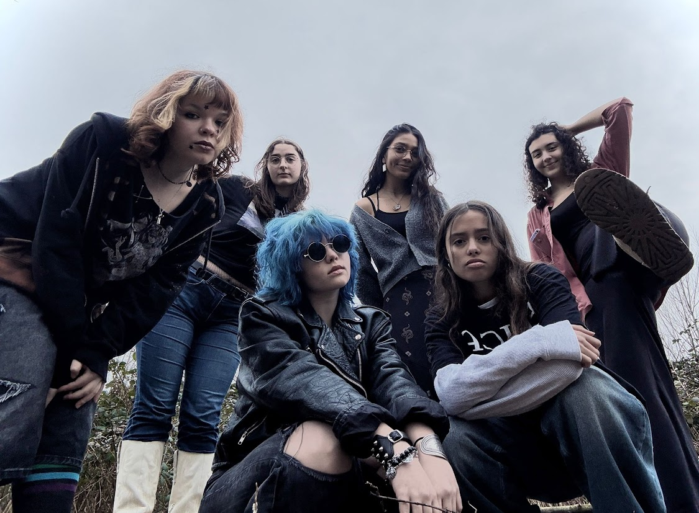

I was born in Warsaw, the capital city of Poland on the 16th of June 2004, and with that 6 and 4 effectively became my favourite numbers. I spend my entire childhood in that city, so till today getting on the plane back to the NL stings a little. My adolescent years can be effectively summed up to books, music and a bit of post-soviet trauma. Throughout school I was always employed in organising performances for any and all celebrations. I sang in the Buffo Musical Theatre, Warsaw's Muscial Academy and completed a first degree of music school in piano.
Alongside my melodically-tainted academic career I got into activism, joining XR Poland, which shaped my COVID years significantly. I miss the drive for action I had back then.
I completed my Bachelor's degree in Liberal Arts and Sciences in Amsterdam University College. I majored in Humanities but AUC forces interdisciplinarity so I dabbled with ecology, political science, logic, religion studies and many many other disciplines. I was doing so much more then I knew was possible and adored every second of it.
AUC is also the birthplace of my band Isle of C*nts. Pls pls pls follow us on instagram!
| Prior Knowledge: | I know nothing but I am very eager to learn. I think coding is very gate-kept and I believe we will all learn it easily. |
| Expectations: | I expect to learn about the modern life of the codex. I expect to get behind the scenes of the publishing industry from the more technical side. |